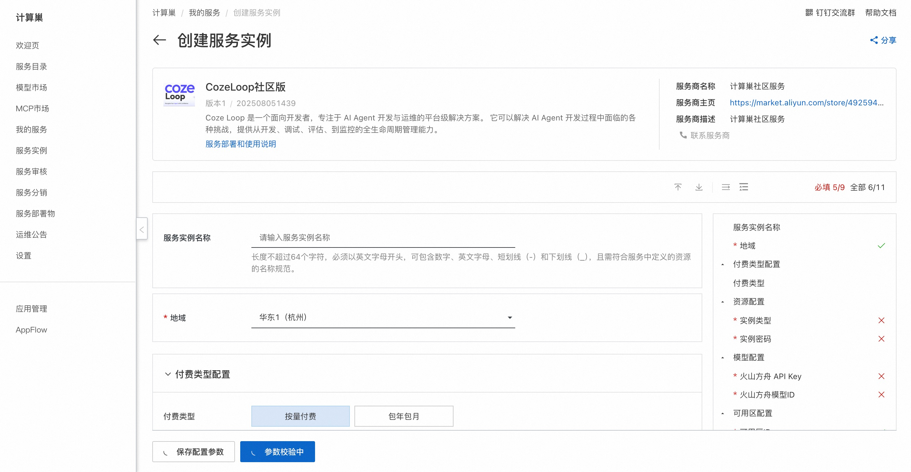
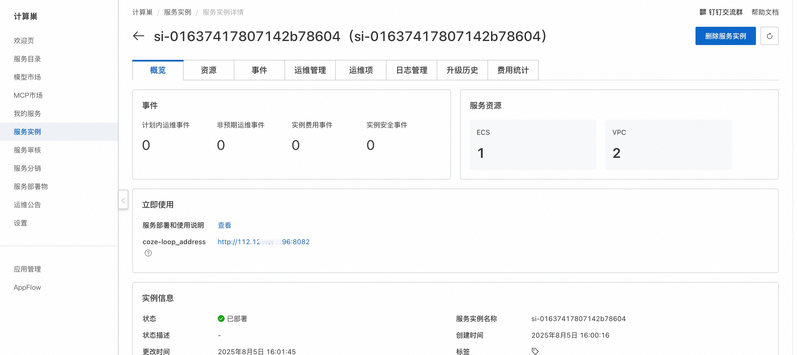
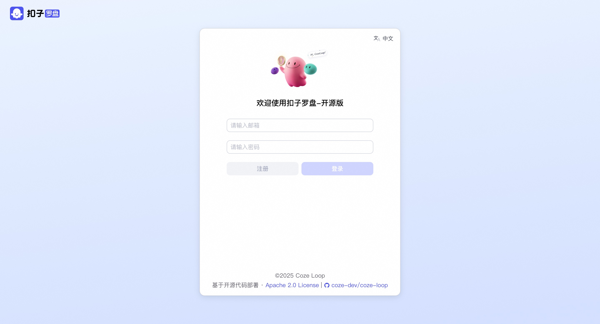

🌟 服务简介
Coze Loop 是一个面向开发者的 AI Agent 开发与运维平台，提供从开发、调试、评估到监控的全生命周期管理能力。它推出开源版免费开放核心功能模块，开发者可基于此定制扩展，助力 AI Agent 的探索与实践。
Coze Loop 能做什么？
Coze Loop 通过提供全生命周期的管理能力，帮助开发者更高效地开发和运维 AI Agent。无论是提示词工程、AI Agent 评测，还是上线后的监控与调优，Coze Loop 都提供了强大的工具和智能化的支持，极大地简化了 AI Agent 的开发流程，提升了 AI Agent 的运行效果和稳定性。
- Prompt 开发：Coze Loop 的 Prompt 开发模块为开发者提供了从编写、调试、优化到版本管理的全流程支持，通过可视化 Playground 实现 Prompt 的实时交互测试，让开发者能够直观比较不同大语言模型的输出效果。
- 评测：Coze Loop 评测模块为开发者提供系统化的评测能力，能够对 Prompt 和扣子智能体的输出效果进行多维度自动化检测，例如准确性、简洁性和合规性等。
- 观测：Coze Loop 为开发者提供了全链路执行过程的可视化观测能力，完整记录从用户输入到 AI 输出的每个处理环节，包括 Prompt 解析、模型调用和工具执行等关键节点，并自动捕获中间结果和异常状态。
功能清单
| 功能 | 功能点 |
|---|---|
| Prompt 调试 | * Playground 调试、对比 * Prompt 版本管理 |
| 评测 | * 管理评测集 * 管理评估器 * 管理实验 |
| 观测 | * SDK 上报 Trace * Trace 数据观测 |
| 模型 | 支持接入 OpenAI、火山方舟等模型 |
💰 计费说明
CozeLoop社区版在计算巢部署的费用主要涉及：
- 所选vCPU与内存规格
- 系统盘类型及容量
- 公网带宽
🚀 部署流程
-
访问计算巢CozeLoop社区版部署链接 ，按提示填写部署参数： 
-
参数填写完成后可以看到对应询价明细，确认参数后点击下一步：确认订单。
-
确认订单完成后同意服务协议并点击立即创建进入部署阶段。
-
等待部署完成后就可以开始使用服务，进入服务实例详情点击服务地址。 
-
访问服务地址，注册账号并使用CozeLoop社区版。 
📚 使用指南
更多用法请参考CozeLoop官网文档。
© 2009-2022 Aliyun.com 版权所有